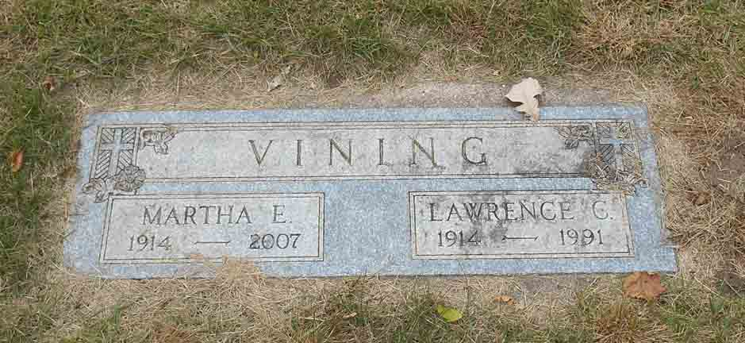
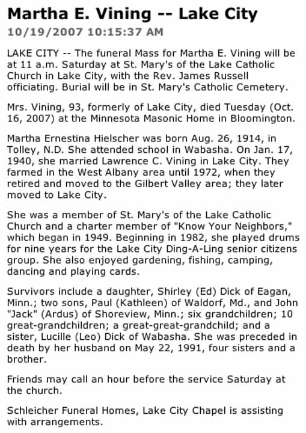

Documentation for Lawrence Claude Vining - Martha Ernestina Hielscher
Death Data
Headstone for Lawrence Claude Vining, in Saint Mary's Cemetery, Lake City, Wabasha County, Minnesota (from Find A Grave):

Obituary for Martha Ernestina (Hielscher) Vining:
